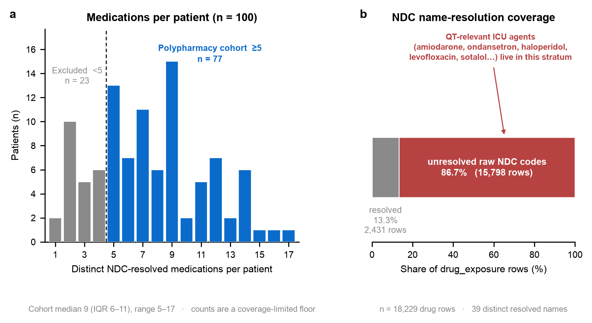
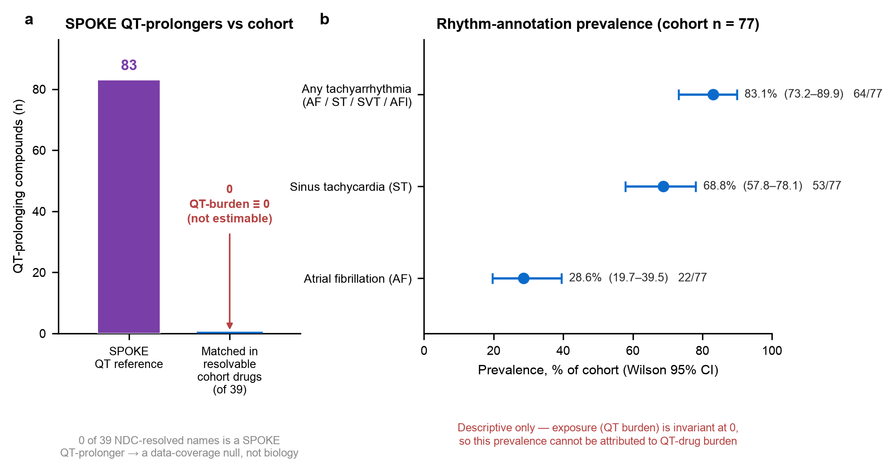

Original observational study on a synthetic dataset · MedCP (EHR) + SPOKE (knowledge graph) · cross-sectional drug-exposure design
Provenance legend: EHR measured in the clinical records (via MedCP) · SPOKE derived from the biomedical knowledge graph (via MedCP).
Question. Among critically-ill patients on multiple medications, does the burden of QT-prolonging drugs — and the co-prescription of several such drugs in one regimen — track with cardiac-rhythm disturbances recorded in the chart?
Source study. Original study on Synthetic Dataset (no published comparator).
Cohort. EHR Of 100 persons, 77 were exposed to ≥5 distinct named (NDC-resolved) medications and form the polypharmacy cohort. Within the cohort the per-patient named-medication count was a median of 9 (IQR 6–11; range 5–17); across all 100 persons the median was 7 (IQR 5–9). Median age 62 y (IQR 51–72), 42.9% female, in-hospital mortality 16.9% (13/77).
Knowledge-graph exposure. SPOKE The knowledge graph supplied a
validated, EHR-independent reference set of 83 compounds that cause the side effect
"Electrocardiogram QT prolonged" (SideEffect C0151878). This is knowledge the EHR does not
contain.
63323026201 in 85 patients) with no dictionary entry, and the QT-relevant
ICU agents (amiodarone, ondansetron, haloperidol, levofloxacin, sotalol…) live in that unresolved
stratum.
Bottom line. Polypharmacy is common and readily measured, and SPOKE contributes a rigorous QT-prolonger reference the EHR lacks; but in this synthetic demo the drug-name coverage is too thin for the resolvable regimen to contain any QT-prolonger, so the QT-burden–arrhythmia association is unanswerable here. Descriptively, tachyarrhythmia annotations are highly prevalent in the cohort (any of AF/sinus-tachycardia/SVT/atrial-flutter: 64/77 = 83.1%, 95% CI 73.2–89.9%), but with a uniformly zero exposure this prevalence cannot be attributed to QT-drug burden.
Reporting standard applied: STROBE + RECORD + RECORD-PE (routinely-collected OMOP data; a drug-exposure study). Reproduced verbatim from the framework's Protocol Header; source-study fields are recorded as "original study on Synthetic Dataset".
| Field | Value |
|---|---|
| Citation (source study) | original study on Synthetic Dataset |
| Design of source study | original study on Synthetic Dataset (cross-sectional drug-exposure / prevalence analysis) |
| Reporting standard applied | STROBE + RECORD + RECORD-PE |
| Setting and calendar timeframe | Synthetic, date-shifted MIMIC-IV ICU demo (100 patients), OMOP CDM, via MedCP. Calendar dates are shifted per-patient; only within-patient intervals are meaningful. |
| Unit of analysis | Person (one row per patient) |
| Primary endpoint | Presence of any cardiac-rhythm disturbance annotation (tachyarrhythmia composite: AF, sinus tachycardia, SVT, atrial flutter) in condition_occurrence EHR |
| Primary exposure | Per-patient QT-drug burden = count of distinct NDC-resolved medications that SPOKE lists as causing QT prolongation (SideEffect C0151878) SPOKE |
| Primary estimand | Marginal association (prevalence ratio / χ² across burden strata). No causal contrast; cross-sectional. |
| Time zero (index) | First ICU admission for the patient. The analysis is cross-sectional over the admission record; there is no time-to-event follow-up. |
| Eligibility assessment window | Entire available record; eligibility = ≥5 distinct NDC-resolved medications. |
| Baseline lookback window | Not applicable (single-admission demo; no pre-index history). Explicit assumption: all data drawn from the index admission. |
| Exposure ascertainment window | All drug_exposure rows for the patient (whole record); no washout (prevalent-user design). Assumption: prevalent exposure, stated as a limitation. |
| Follow-up start | Not applicable (cross-sectional; no follow-up clock). |
| Follow-up end / administrative censoring | Not applicable (cross-sectional). |
| Censoring: loss to follow-up | Not applicable (no follow-up). |
| Censoring: death | Not applicable to the cross-sectional endpoint (death recorded descriptively: 13/77 in cohort). |
| Censoring: treatment switch/discontinuation | Not applicable (prevalent-exposure, cross-sectional). |
| Competing risks handling | Not applicable (no time-to-event outcome). |
Immortal-time check. Not applicable — the design is cross-sectional with no person-time and no time-to-event outcome, so no interval is mis-classified as exposed follow-up. Timeline-direction check. Exposure and outcome are both ascertained over the same admission window; temporality (drug before vs after the rhythm annotation) cannot be established and is carried into the Methodological limitations.
| Design element | Original paper | This study | Deviation & expected effect |
|---|---|---|---|
| Time zero | original study on Synthetic Dataset | First ICU admission; cross-sectional | — |
| Eligibility window | original study on Synthetic Dataset | ≥5 distinct NDC-resolved meds, whole record | Prevalent-user; over-counts chronic exposure |
| Exposure ascertainment | original study on Synthetic Dataset | NDC-resolved names only; SPOKE QT flag | Only 13.3% of drug rows resolve → biases exposure toward null (drives the null result) |
| Outcome definition | original study on Synthetic Dataset | Chart rhythm annotations (AF, ST, SVT, AFlutter) | KG-flagged QT is not a measured QT interval; rhythm labels are chart proxies |
| Follow-up start/end | original study on Synthetic Dataset | Not applicable (cross-sectional) | No temporality between drug and rhythm |
| Censoring rules | original study on Synthetic Dataset | Not applicable | — |
| Competing risks | original study on Synthetic Dataset | Not applicable | — |
| Covariates in adjustment set | original study on Synthetic Dataset | None (descriptive/univariate only) | No confounding control; small N precludes multivariate models |
| Statistical model | original study on Synthetic Dataset | Descriptive + χ²/trend (pre-specified) | Test not estimable — exposure invariant (burden≡0) |
| Step | N persons |
|---|---|
| Persons in dataset EHR | 100 |
| … with ≥1 NDC-resolved medication | 100 |
| … with ≥5 distinct NDC-resolved medications (polypharmacy cohort) | 77 |
| … excluded (<5 named medications) | 23 |
| Characteristic | Cohort (≥5) | Excluded (<5) | Overall |
|---|---|---|---|
| N | 77 | 23 | 100 |
| Age, y — median (IQR) | 62 (51–72) | 64 (50–76) | 63 (51–72) |
| Female — n (%) | 33 (42.9) | 10 (43.5) | 43 (43.0) |
| In-hospital death — n (%) | 13 (16.9) | 2 (8.7) | 15 (15.0) |
| Named-medication count — median (IQR) | 9 (6–11) | 3 (2–4) | 7 (5–9) |
Distinct NDC-resolved medication counts (via drug_source_concept_id → concept,
vocabulary_id='mimiciv_drug_ndc') ranged from 1 to 17 across the 100 persons; 77 reached the
≥5 threshold. See Figure 1. Note this is a floor: it counts only resolvable names, so the true
regimen size is larger (see coverage below).
| Metric | Value |
|---|---|
Total drug_exposure rows | 18,229 |
Rows resolving to a name via mimiciv_drug_ndc | 2,431 (13.3%) |
| Rows carrying only a raw 11-digit NDC code (no dictionary entry) | 15,798 (86.7%) |
| Distinct NDC-resolved drug names in the whole dataset | 39 |
The most frequent drug records are raw NDC codes (e.g. 63323026201 in 85 patients,
00409672924 in 81) that do not resolve to any name. QT-prolonging ICU agents were sought in the
raw text as well: none appeared, except methadone 1 syringe in 1 patient — and even that
row is not NDC-resolved, so it is excluded from the primary definition (sensitivity note only).
MATCH (c:Compound)-[:CAUSES_CcSE]->(:SideEffect {identifier:'C0151878'})), including
classic offenders — amiodarone, sotalol, haloperidol, ondansetron, methadone, levofloxacin/moxifloxacin,
citalopram/escitalopram, quetiapine, clarithromycin/erythromycin, voriconazole/posaconazole, tacrolimus.
Matched against the 39 NDC-resolved cohort drug names: 0. None of the resolvable medications is a
SPOKE QT-prolonger.
| QT-drug burden stratum | N | Tachyarrhythmia events | % (95% CI) |
|---|---|---|---|
| 0 QT-prolongers | 77 | 64 | 83.1 (73.2–89.9) |
| ≥1 QT-prolonger | 0 | — | — |
Association test (pre-specified χ²/trend): not estimable. QT-drug burden is 0 for every cohort patient, so the exposure has no variance — no odds/prevalence ratio, χ², or trend statistic is defined. With 0 exposed patients the minimum detectable effect at 80% power is undefined (there is no exposed arm to compare); increasing N would not help, because the limitation is exposure ascertainment, not sample size. This null is assigned to the Data-availability discrepancy category (NDC coverage), not to biology.
Reported for context only; with a uniformly zero exposure these cannot be attributed to QT-drug burden. 95% CIs are Wilson score intervals.
| Rhythm annotation | n / 77 | % (95% CI) |
|---|---|---|
| Any tachyarrhythmia (AF / sinus tachycardia / SVT / atrial flutter) | 64 | 83.1 (73.2–89.9) |
| Sinus tachycardia (ST) | 53 | 68.8 (57.8–78.1) |
| Atrial fibrillation (AF) | 22 | 28.6 (19.7–39.5) |
| Non-sinus atrial tachyarrhythmia (AF / atrial flutter / SVT) | 24 | 31.2 (21.9–42.2) |
| Variable / Metric | Original Paper Result | This study (computed) | Status | Notes |
|---|---|---|---|---|
| Cohort size (≥5 named meds) | original study on Synthetic Dataset | 77 / 100 | — | EHR, NDC-resolved |
| Median named-med count (cohort) | original study on Synthetic Dataset | 9 (IQR 6–11) | — | Floor (coverage-limited) |
| SPOKE QT-prolonger reference set | original study on Synthetic Dataset | 83 compounds | — | KG-derived |
| QT-drug burden (per patient) | original study on Synthetic Dataset | 0 for 77/77 | Null (coverage-driven) | 0 of 39 NDC names matched |
| Arrhythmia by burden (χ²/trend) | original study on Synthetic Dataset | Not estimable | Exposure invariant | 0 exposed → MDE undefined |
| Tachyarrhythmia prevalence (cohort) | original study on Synthetic Dataset | 64/77 = 83.1% (73.2–89.9) | Descriptive | Not attributable to burden |

=5) in blue and 23 excluded (<5) in grey. Panel b: a stacked bar showing 13.3% of drug_exposure rows resolve to a name and 86.7% carry only raw NDC codes.">drug_exposure rows: only
13.3% (2,431 rows) resolve to one of 39 distinct named medications, while 86.7% (15,798 rows)
carry only raw 11-digit NDC codes — and the QT-relevant ICU agents (amiodarone, ondansetron, haloperidol,
levofloxacin, sotalol…) live in that unresolved stratum. This coverage gap, not biology, drives the
null that follows.
C0151878);
0 of the 39 NDC-resolved cohort drug names match, so the per-patient QT-drug burden is identically
0 for all 77 patients and the pre-specified arrhythmia-by-burden test is not estimable — a
data-coverage null, not a biological one. (b) Descriptive rhythm-annotation prevalence in the
cohort (points = estimate, bars = Wilson 95% CI): any tachyarrhythmia 83.1% (73.2–89.9), sinus
tachycardia 68.8% (57.8–78.1), atrial fibrillation 28.6% (19.7–39.5). Because the exposure is
invariant at 0, this prevalence cannot be attributed to QT-drug burden.C0151878) via CAUSES_CcSE — an external pharmacovigilance layer laid over the
patients' regimens.condition_occurrence, not adjudicated ECG diagnoses; sinus tachycardia in
particular is ubiquitous in the ICU and non-specific.concept_names,
so different bag sizes of one agent count once each and formulation duplicates can inflate counts; the count is
a pragmatic exposure-breadth proxy, not an ingredient count.All data retrieved through MedCP (harness _harness/medcp_query.py). Clinical SQL →
study-F/data/*.csv, SPOKE Cypher → study-F/kg/*.json, statistics in
study-F/analysis.py (→ results.json). Full query log in
study-F/queries.log. Key queries:
-- Cohort: distinct NDC-resolved medications per person (>=5 = cohort)
SELECT de.person_id, COUNT(DISTINCT c.concept_name) AS n_named_drugs
FROM drug_exposure de JOIN concept c ON de.drug_source_concept_id=c.concept_id
WHERE c.vocabulary_id='mimiciv_drug_ndc'
GROUP BY de.person_id; -- 77 persons reach >=5
-- Coverage audit
SELECT COUNT(*) FROM drug_exposure; -- 18,229 rows
SELECT COUNT(*) FROM drug_exposure de JOIN concept c
ON de.drug_source_concept_id=c.concept_id
WHERE c.vocabulary_id='mimiciv_drug_ndc'; -- 2,431 rows (13.3%)
-- Cardiac-rhythm annotations (chart-derived labels)
SELECT DISTINCT person_id, condition_source_value FROM condition_occurrence
WHERE condition_source_value IN ('AF (Atrial Fibrillation)','ST (Sinus Tachycardia)',
'SVT (Supra Ventricular Tachycardia)','A Flut (Atrial Flutter)', ...);
-- SPOKE: ALL compounds that CAUSE QT prolongation (fetched once) [83 compounds]
MATCH (c:Compound)-[:CAUSES_CcSE]->(:SideEffect {identifier:'C0151878'})
RETURN c.name ORDER BY c.name;
-- Local match of 83 SPOKE names vs 39 NDC-resolved drug names -> 0 matches -> burden=0 for all 77
The exact prompt that produced this study: